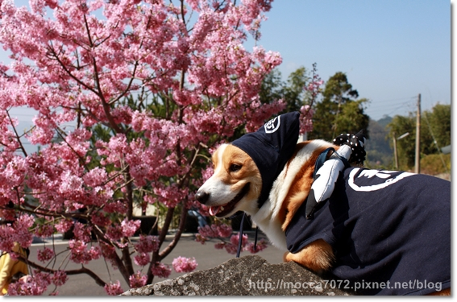
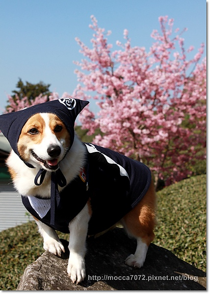
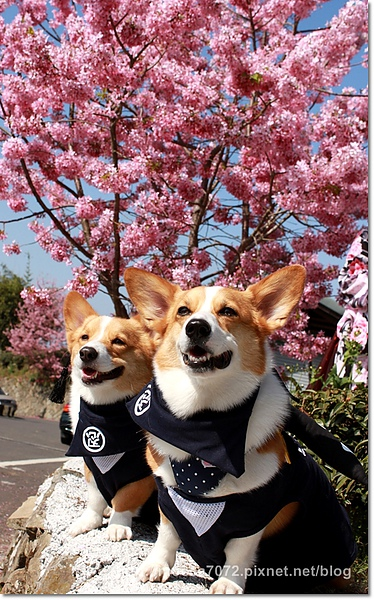
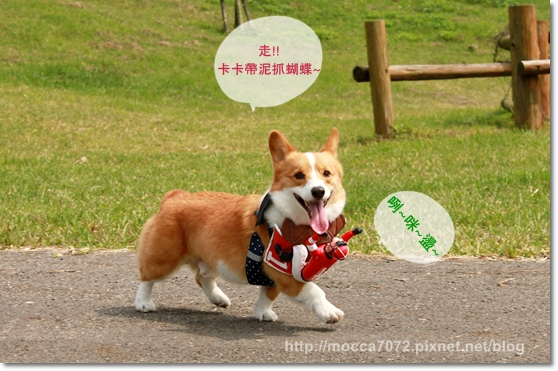
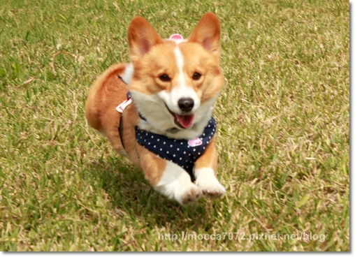
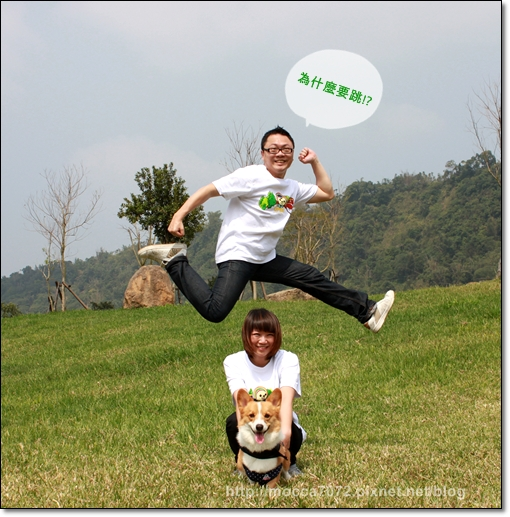
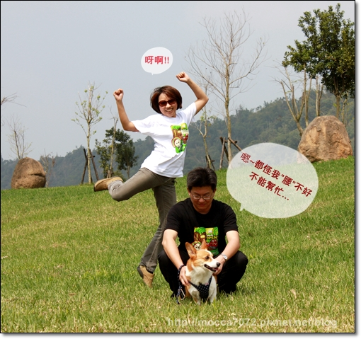
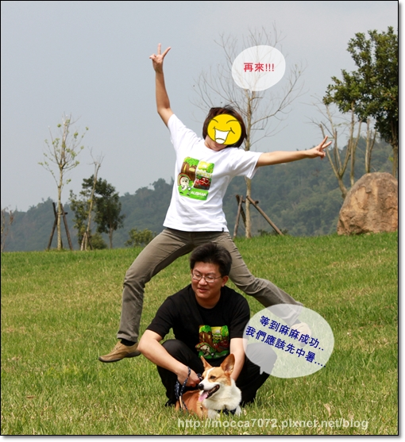
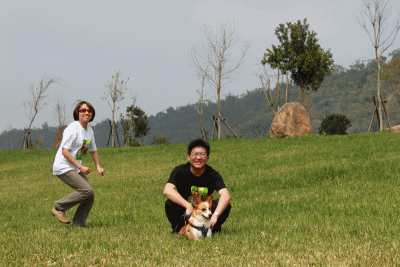
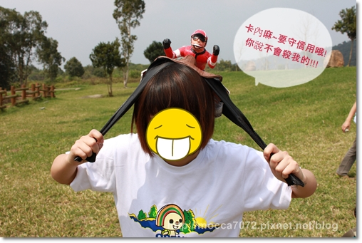

櫻花與忍犬卡卡～萌萌！
回台北的途中卡內家叫我們跟好，途中就停留了這個點
這個地點看起來就像是路邊開了幾棵櫻花樹，沒想到這居然是內行人才知道的拍攝點！
我們會知道當然也是有行家-->卡內拔的指引嘍！
而且還不少人特地停留拍照，有人還著日本和服，不過猛哥對女的沒興趣?都沒拍到她！XD

卡內拔常笑卡卡眼睛小到不好對焦！！抗議啊～
你看看這張就清清楚楚對在摩卡卡的右眼！XD 超可愛的～穿起忍犬裝很有感覺！

戴上忍犬帽，卻活像個賣菜的日本歐巴桑.......
綁太緊還讓眼袋硬生生被擠了出來~~糾賣~糾賣

小臉美人胚卡ㄋㄟ就不用擔心臉腫的問題！
身上配件無論是什麼，都不會蓋掉這小妮子的妖豔！？

可是我更喜歡看到卡ㄋㄟ難得出現的浩呆樣！哈哈哈
跟我們家小拔ㄔ卡嚕比混久惹，智商很難不變低～噗！XDDDD

經典時尚怪比例-大頭小身體！激賞！！！

繼續往回家的路上前進，途中有塊超大超大的草皮！
草皮看起來挺乾淨的草還算短，似乎有在維護還不錯！
（但我不知道這什麼地方，麻麻說下車就乖乖滾下車，不用多問！ ）
）
這幾天上山大多是階梯沒什麼機會讓倆兄弟大肆的噴跑，一定要彌補一下嘍！

其實原來重點是卡內麻從加拿大帶回來的神秘小騎士要登場啦！
卡內麻那篇圖文超強，笑到翻掉！請點-->加拿大失心瘋戰利品第二彈--JOCKEY
話說摩卡卡當天其實真的是在抓蝴蝶，天然的玩具!?

糊糊的但還是有飛超來哦！可是小騎士一整個看不到人影 

超認真追蝴蝶的卡嚕比根本就懶的理背上的小騎士！
他邊跑小騎士的手邊往他臉上揮拳也完全不care ~~XDDDDDDD

而且不瞞各位，我們家照片很多張根本就沒有拍到小騎士本人......
完完全全被大頭怪擋的很徹底啊！！！哈哈哈哈哈

這.....明明就是我要好好拍個一家三口，為什麼要跳？不解
而且是正中午，太陽大到我都快中暑惹！！！

連卡卡也很不解老北為什麼要跳！
在這裡玩太久，猛哥回家居然曬傷，額頭大脫皮！

＝＝＝＝＝＝＝＝＝＝＝放棄人生的許歌琳最後代表作？＝＝＝＝＝＝＝＝＝＝＝
各位捧油，當你們看到這篇文章我本人已經滾回火星避風頭，
如果有好心人幫我求情，我應該可以快點回地球！
我家?卡內麻可能是看到猛哥跳起來那自爽的表情似乎感覺不錯！
居然自己加碼，說他們全家福也要跳一下，驚！！！
而且是卡內麻親自上陣，因為拔拔患有CHD不太方便....
下圖第一跳~~這瞎毀！？？？ 有跳嗎? 哈哈哈哈

我家卡內麻實在是太太太太太太可愛惹！
我寫文挑照片時，邊挑邊抖！笑到抖不停~
雖然我自己也做不到沒什麼資格笑別人啦！但卡內麻實在太爆笑了～XDDDD
老公與兒子同時遠目......

第二跳~~~麻麻最近壓力大厚！好拚～

這是第Ｎ次跳！！來個動態的～

成功的男人背後一定有個偉大的女人！？你們說說抗，這標題是不是很感人肺腑哇～
卡內拔為了不辜負瑪麻在後頭賣力的演出，開開心心的拍照而且還比了個ＹＡ耶！！！
怎嘛有這嘛感動人心的照片！！淚奔~ (其實是因為老娘寫完要跑路,所以想哭... )
)

卡內麻~~我們的約定你沒忘吧！！！

看在我兒子年紀這嘛小的份上，放我一馬吧！！！！
卡卡快跑哇～～千萬不要被抓到惹！麻麻晚一點再去接你～Love u~